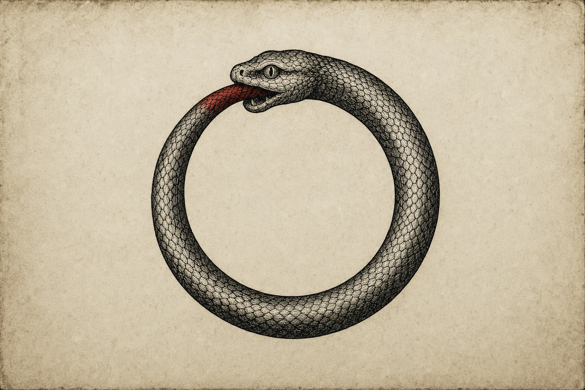
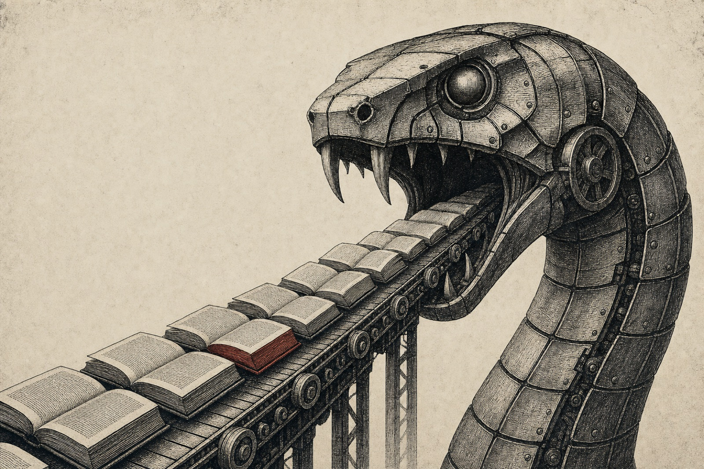

A project on AI, fair use, and the loop that feeds itself
Everything it learned, it ate.
Pick a segment of the snake to enter the loop.

Welcome
I’m Neel Anshu, and this site is my project for ENGL C1001: Critical Thinking & Writing. It examines a contradiction my own industry is built on: the AI labs that scraped the world’s writing, art, and code to build their models are now fighting to stop imitators from doing the same thing to them. Every page of the argument is a segment of the ouroboros — and the Works Cited sits at the tail, right where the snake is swallowing it.
Trail log · the route — eleven segments, dawn to starlight
Topic
This project is about the fight over the data AI models use to produce their output. Frontier labs built their systems by scraping the internet for everything usable. Books, art, and code were all sucked into these massive systems under the guise of transformative fair use, while bringing in massive stock valuations and profits for the labs.
Impact
The decision that comes out of this fight is imperative to the future of the world. Control over how future models are created could make or break their business models. The incentive to keep producing human writing, art, and code gets more and more eroded. I want every reader to question: what rule about using human data for training would they actually accept, and how realistic would enforcing it be?

![Poster titled ‘It’s Fair Use When We Do It.’ A snake drawn as a circular pipeline eats its own tail. Its black half — human work copied into an AI model — is stamped ‘quintessentially transformative: FAIR USE,’ Exhibit A, 2025. Its red half — the AI’s answers copied again into a cheaper copycat — is thicker (16 million exchanges by about 24,000 fake accounts vs. 7 million pirated books, drawn to scale) and stamped ‘free-ride: THEFT,’ Exhibit B, 2026. Around the loop, four groups each win under one rule and lose under the other; at center sit the value collisions and the $1.5 billion paid to authors.](assets/infographic.png)